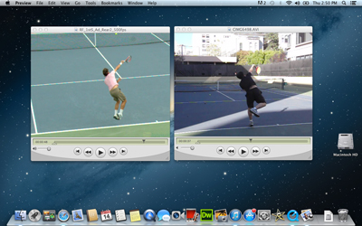

Previous: Teaching Systems TOC | 🏠 Teaching Systems Home | Next: A New Teaching System - High Speed Video Analysis - Inexpensive and Simple
A new teaching system introduction
Comprehensive unified tennis knowledge base — Fundamentals, Stroke Analysis, Reference Library, and more
A New Teaching System:Introduction
John Yandell
A 10-year adventure contemplating amazing variety, culminating in a new method.
For over 10 years I have been on a fantastic adventure, exploring the amazing variety of trees in the forest of professional stroke production. Now it’s time to elevate and create an overview of the entire forest--specifically how to apply everything I have learned to raising your game to the highest technical level.
That’s why I am tremendously excited to present a new teaching system in this extended series of new articles. To me, this is culmination of my life’s work in studying and teaching the game for over 25 years.
The system is based on unprecedented high speed video research, principles of physical learning and the use of powerful, yet simple and inexpensive video technology. It teaches you how to progressively develop your game and as importantly, your confidence. The system does this by bridging the physical and the mental game through the use of your own mental imagery.
This work is based on research, learning principles, and video technology, but it also on my experience in testing and applying what I have learned working with Grand Slam champions, complete beginners, players at every level in between, and in my own game as well. I believe it is far ahead of its time in comparison to how the game is widely taught, and I have complete confidence it’s power to change your game.
Every Stroke Every Variation
In this series of articles, we will cover every stroke in tennis from the serves, to the groundstrokes to the net game to the returns. On every stroke, we’ll start with an overview of basic technical elements, and the range of additional elements. We will explain how to develop them in the way that is most appropriate for your game at your level and help you build your own world class technical foundation.
A methodology that identifies and helps you master the critical positions.
This work has stemmed from the study of literally hundreds of hours of high speed footage of the greatest strokes in the history of tennis--all in live match play. This live footage is critical, and something that is exclusive to this system.
Although there is now a substantial body of pro practice footage on the internet, it varies tremendously in quality and rarely matches the execution seen in actual competition.
Many coaches and players see Roger Federer or Novak Djokovic or Andy Murray or Rafael Nadal hit one practice forehand or practice backhand or practice serve, and conclude that they understand what these players are doing and how to recreate it.
In match play there are huge variations in incoming ball speed, court location, spin, contact height, depth and angles. And exactly the same factors in the outgoing shots the player produce. These combinations—the essence of real tennis--are not replicated in practice.
This system identifies what elements are truly core and how top players put them together in matches to produce the phenomenally dynamic combinations of motions we call tennis strokes. This is the basis for a comprehensive path to follow in developing them for yourself.
The Core
The core of the system is the teaching progressions for creating correcting, or evolving your own stroke motions. These progressions start by identifying stroke models and the key positions within those models, drawn from the pro footage sources.
Flow through your strokes and your matches with image and feeling.
Mastering these key positions physically and mentally gives you the ability to move through the swings with effortless precision. The result is power, accuracy, consistency, variety—the confidence to hit every shot in the game and do that under pressure.
This teaching methodology is so effective because it utilizes fundamental principles of learning theory. These principles are, unfortunately, not understood or incorporated in traditional lessons and teaching.
Traditional lessons are based on a constant and sometimes overwhelming barrage of verbal information. While verbal explanation of the elements in any stroke is one part of the teaching process, words by themselves are ultimately insufficient in developing or improving technique.
In contrast, this system is based on teaching in the way the body learns physical motions. Research has shown that the physical learning process is primarily visual and kinesthetic. It’s a matter of learning to see and feel, not simply understand.
My system teaches you to physically replicate the stroke model and to visualize that model and it’s the key components within your mind’s eye. It synthesizes these two halves into a seamless experience that produces world class strokes that are both natural and automatic.
Pictures and feelings are what guide top players in actual play. Using this system, students learn to follow their own internal mental images and feelings and make this process primarily subconscious.

In this series you’ll see how to compare your key positions to your strokes models without expensive cameras or software.
They flash through the mind at the speed of the physical game. By using them, players bypass the paralysis that comes from trying to "think through" what you are actually doing on the court.
Thinking your way through a tennis stroke is impossible anyway. Words and physical movement don’t mix. And this is why so many traditional tennis lessons prove to be so ineffective and frustrating over time.
This is also why so many high level players are incapable of describing in words how they hit the ball, even when they have been trained by some of the world’s best technical teachers. They don’t experience what they do in words. The great John McEnroe reduced it to a sentence: "A shot flashes across my mind and then I hit it."
The goal of this new methodology is to help you create this same state of fluid, technical mastery for yourself, to flow through matches guided by imagery and physical sensations that allow your body to produce your best tennis.
A Magical Bridge
This synthesis is the magical bridge between the physical and the mental game. By developing your own personal array of visual and kinesthetic keys, you can flood your nervous system with positive imagery and feelings throughout match play, and especially at critical times. The system gives you a simple, powerful method for performing under pressure, learning to overcome choking, and for playing your best tennis at the times when it is most difficult and most rewarding.
The development of your stroke models is the fundamental first step in developing world class technical strokes. But one of the great myths that prevents real improvement is the belief that the ability to execute a stroke in a lesson or simple practice automatically translates into competitive play. That is never the case.
Develop the basic elements and the variations that apply to your game.
The critical step in integrating change permanently is through a series of progressive development exercises and drill games that create simulated game pressure and then gradually increase it as the player’s confidence and mastery develops.
On all the strokes there are multiple progressive levels on your way to playing your best tennis in competition. This series of articles will show you the steps to reach them for every stroke.
At every stage of the learning process video feedback is critical. In these articles we will show you how to create this for yourself, painlessly and inexpensively. Another myth is that to do this you need costly, complicated software. But nothing could be further from the truth.
What you need is a new generation consumer high speed camera (at a cost equal to that of a few traditional tennis lessons) plus your current laptop, or even just your ipad or iphone. That’s it.
That minimal array allows you to do the same kind of phenomenally powerful video analysis that I do for the players who come to my teaching court from all over the world.
Interact Directly
Throughout the process, I will be available in our Interactive Forum to answer your questions and evaluate your progress. And if you want to come to San Francisco to work with me personally you can, as have so man Tennisplayer subscribers over the years.
Which pro elements are really right for your game—and when?
As I have explored the incredible technical mastery and variety of the games of the best players in my articles in the Advanced Tennis section (Click Here) I have tried not only to demonstrate what top players were actually doing, but to explain the implications for players at all levels.
I have never believed in the automatic, direct or immediate translation of all advanced pro elements into the developmental process for the vast majority of players. This something I have tried to make repeatedly clear. But with the excitement and inspiration triggered by the discoveries in this footage, that message has been on occasion lost, or even frequently lost.
In the vast, conflicted world of tennis teaching there are those you will tell that it is easily possible to "play like the pros"—and easily possible for all players at all levels--that you can instantly learn even the most advanced technical components in a day, or even by just watching a DVD.
The Art
The reality is that there is no uniform pro technique. These claims are not based on research or careful study and the result for players is often severely counterproductive. The art of responsible teaching lies in understanding the complexities of this phenomenal game, being able to see the underlying commonalities, to extract them, and present a teaching system that is not only clear and easy to follow but is based on sound judgment about what to teach in what sequence to whom. And always with the goal of going higher.
That is what this series is all about. If you are ready to work, ready to understand, ready to be amazed, then you have come to the right place and your efforts will find reward. I am tremendously excited to demonstrate in detail how this new teaching method works and to help you recreate the experience that I have had with players on my own teaching court, and on teaching courts around the world. Stay tuned.

John Yandell is widely acknowledged as one of the leading videographers and students of the modern game of professional tennis. His high speed filming for Advanced Tennis and Tennisplayer have provided new visual resources that have changed the way the game is studied and understood by both players and coaches. He has done personal video analysis for hundreds of high level competitive players, including Justine Henin-Hardenne, Taylor Dent and John McEnroe, among others.
In addition to his role as Editor of Tennisplayer he is the author of the critically acclaimed book Visual Tennis. The John Yandell Tennis School is located in San Francisco, California.
Source: tennisplayer.net archive — A New Teaching System_Introduction.docx (John Yandell teaching library, 2002-2022). Extracted and rendered as HTML for Tennis Future Lab.